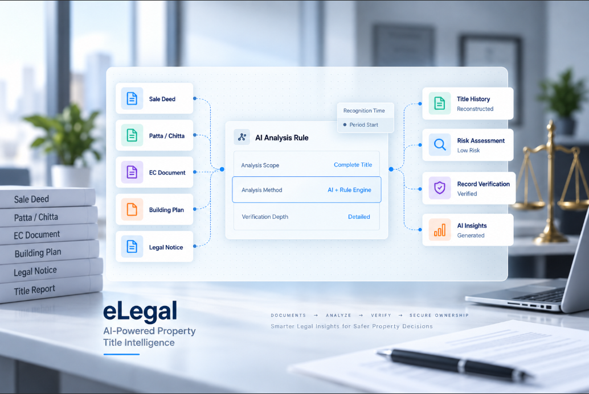

Matter and case management
Every matter with its parties, stage, counsel and history in one place.
Industries & Use Cases
Legal teams lose time to retrieval: finding the current version, the last order, the agreed position. A system organized around the matter removes most of that.
Deadlines and limitation periods are tracked by the platform, which is where that responsibility belongs.

What we deliver
Every matter with its parties, stage, counsel and history in one place.
Versioning, templates, approvals and secure sharing.
Drafting, negotiation tracking, obligations and renewal alerts.
Hearing dates, filings and limitation periods with automatic reminders.
External counsel budgets, invoices and matter-wise cost reporting.
Statutory obligations tracked with owners and evidence.
Outcomes
Less searching, more advising.
Deadlines and obligations do not depend on individual memory.
Legal cost becomes reportable by matter and by counsel.
Tell us where you are today. We will map the shortest route to a working solution.